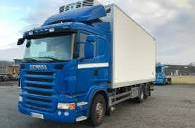
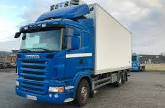
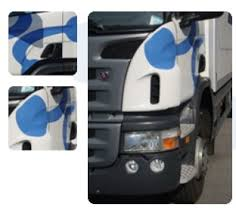
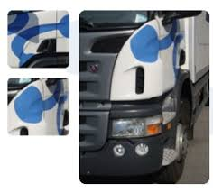

 

Kontakta oss!
För frågor om transportuppdrag kontakta:
Jocke: 0708-465387, je@eierud.se
För administrativa frågor kontakta:
Våra tjänster
Vi har kundspecifika lösningar!!
Läs mer >>Våra miljömål
Eieruds Transport har en utarbetad och årligen uppdaterad Miljöpolicy (godkänd av arbetsmiljöverket), en arbetsmiljöpolicy samt en trafiksäkerhetspolicy. Nämnda policys omfattar allt ifrån hantering av gods, agerande vid ev tillbud, kör- och vilotider, jämställdhet, val av leverantörer, klimatsmart körning.
Läs mer >>